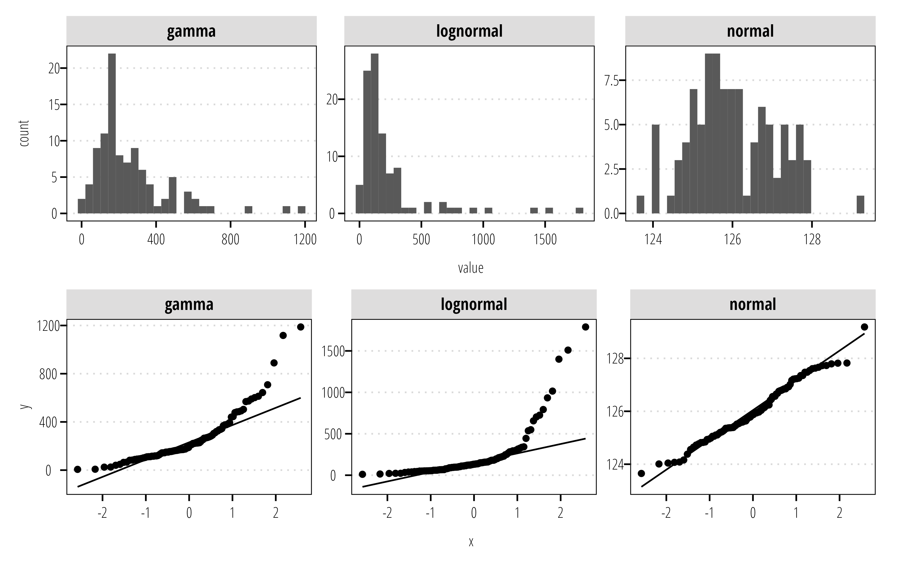
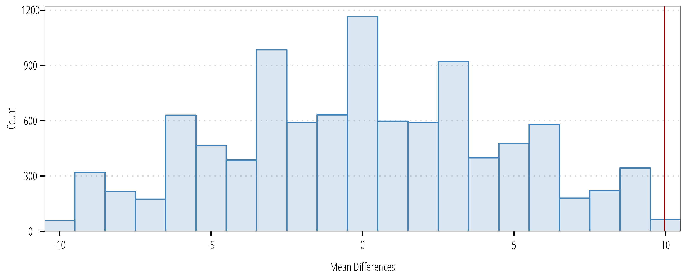
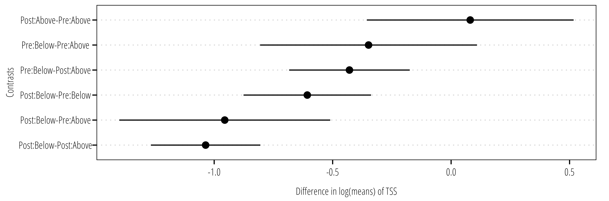
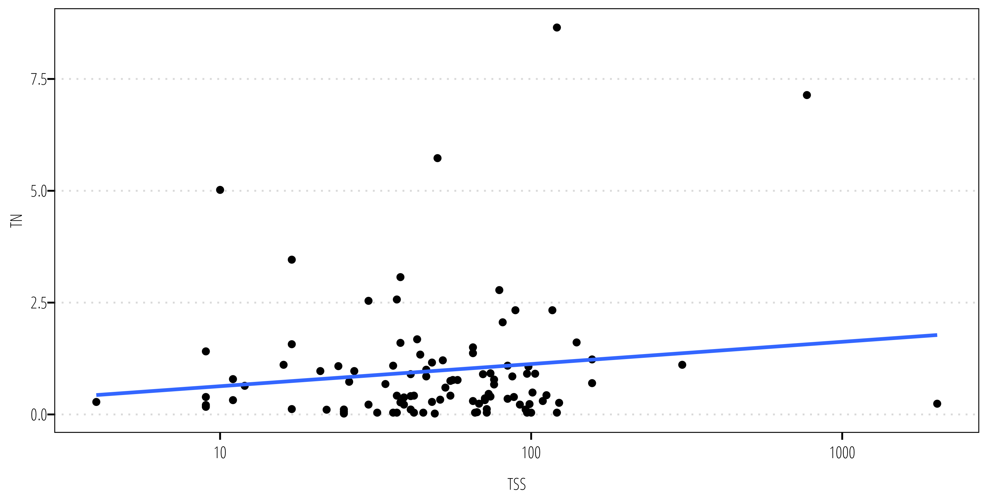
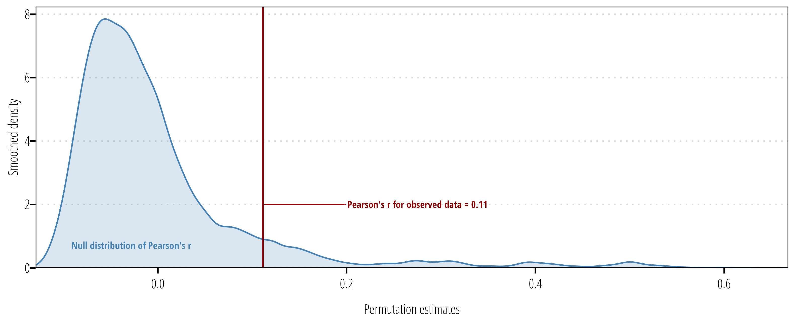

| Data | Parametric | Nonparametric | Permutation |
|---|---|---|---|
8 Hypothesis Testing
This section introduces some statistical approaches commonly used in out projects. For an in depth discussion and examples of statistical approaches commonly employed across surface water quality studies, the reader is highly encouraged to review Helsel et al. (2020).
8.1 Hypothesis Tests
Hypothesis tests are an approach for testing for differences between groups of data. Typically, we are interested in differences in the mean, geometric mean, or median of two or more different groups of data. It is useful to become familiar with several terms prior to conducting a hypothesis test:
Null hypothesis: or \(H_0\) is what is assumed true about a system prior to testing and collecting data. It usually states there is no difference between groups or no relationship between variables. Differences or correlations in groups should be unlikely unless presented with evidence to reject the null.
Alternative hypothesis: or \(H_1\) is assumed true if the data show strong evidence to reject the null. \(H_1\) is stated as a negation of \(H_0\).
\(\alpha\)-value: or significance level, is the probability of incorrectly rejecting the null hypothesis. While this is traditionally set at 0.05 (5%) or 0.01 (1%), other values can be chosen based on the acceptable risk of rejecting the null hypothesis when in fact the null is true (also called a Type I error).
\(\beta\)-value: the probability of failing to reject the null hypothesis when is is in fact false (also called a Type II error).
Power: Is the probability of rejecting the null when is is in fact false. This is equivalent to \(1-\beta\).
The first step for an analysis is to establish the acceptable \(\alpha\) value. Next, we want to minimize the possibility of a Type II error or \(\beta\) by (1) choosing the test with the greatest power for the type of data being analyzed; and/or, (2) increasing the sample size.
With an infinite sample size we can detect nearly any difference or correlation in two groups of data. The increase in sample size comes at a financial and human resource cost. So it is important to identify what magnitude difference needs to be detected for relevance to the system being detected 1. After establishing \(H_0\), \(H_1\), and the acceptable \(\alpha\)-value, choose the test and sample size needed to reach the desired power.
The probability of obtaining the calculated test statistic when the null is true the p-value. The smaller the p-value the less likely the test statistic value would be obtained if the null hypothesis were true. We reject the null hypothesis when the p-value is less than or equal to our predetermined \(\alpha\)-value. When the p-value is greater than the \(\alpha\)-value, we do no reject the null (we also do no accept the null).
8.2 Choice of test
Maximize statistical power by choosing the hypothesis test appropriate for the characteristics of the data you are analyzing. Table 8.1 provides an overview of potential tests covered in Helsel et al. (2020). There are many more tests and methods available than are covered here, but these cover the most likely scenarios.
Comparison types:
Two independent groups: Testing for differences between two different datasets. For example, water quality at two different sites or water quality at one site before and after treatment.
Matched pairs: Testing differences in matched pairs of data. For example, water quality between watersheds or sites when the data are collected on the same days, or comparing before and after measurements of many sites.
Three of more groups: Testing differences in data collected at three or more groups. For example, comparing runoff at 3 treatment plots and one control plot.
Two-factor group comparison: Testing for difference in observations between groups when more than one factor might influence results. For example, testing for difference in water quality at an upstream and downstream site and before and after an intervention.
Correlation: Looking for linear or monotonic correlations between two independent and continuous variables. For example, testing the relationship between two simulatanesouly measured water quality parameters.
We also select test by the characteristics of the data. Non-skewed and normally distributed data can be assessed using parametric tests. Data following other distributions or that are skewed can be assessed with non-parametric tests. Often, we transform skewed data and apply parametric tests. This is appropriate but the test no longer tell us if there are differences in means, instead it tells us if there is a difference in geometric means. Similarly, nonparametric test tell us if there is shift in the distribution of the data, not if there is a difference in the means. Finally, we can utilize permutation tests to apply parametric test procedures to skewed datasets without loss of statistical power.
8.2.1 Plot your data
Data should, at minimum, be plotted using histograms and probability (Q-Q) plots to assess distributions and characteristics. If your data includes treatment blocks or levels, the data should be subset to explore each block and the overall distribution. The information from these plots will assist in chosing the correct type of tests described above.
library(tidyverse)
library(twriTemplates)
library(patchwork)
df <- tibble(normal = rnorm(100, mean = 126),
lognormal = rlnorm(100, meanlog = log(126)),
gamma = rgamma(n = 100, shape = 2, scale = 126)) |>
pivot_longer(cols = everything(),
names_to = "distribution", values_to = "value")
p1 <- ggplot(df) +
geom_histogram(aes(value)) +
facet_wrap(~distribution,
scales = "free") +
theme_TWRI_print()
p2 <- ggplot(df) +
geom_qq(aes(sample = value)) +
geom_qq_line(aes(sample = value)) +
facet_wrap(~distribution,
scales = "free") +
theme_TWRI_print()
p1/p2

8.3 Two independent groups
This set of tests compares two independent groups of samples. The data should be formatted as either two vectors of numeric data of any length, or as one vector of numeric data and a second vector of the same length indicating which group each data observation is in (also called long or tidy format). The example below shows random data drawn from the normal distribution using the rnorm() function. The first sample was drawn from a normal distribution with mean (\(\mu\))=0.5 and standard deviation (\(\sigma\))= 0.25. The second sample is drawn from a normal distribution with \(\mu\)=1.0 and \(\sigma\) = 0.5.
In the example above sample_1 and sample_2 are numeric vectors with the observations of interest. These can be stored in long or tidy format. The advantage to storing in long format, is that plotting and data exploration is much easier:
## get those vectors into a data frame or tibble format
df <- tibble(sample_1 = sample_1,
sample_2 = sample_2) |>
## convert to long format
pivot_longer(everything(),
names_to = "group")
df# A tibble: 20 × 2
group value
<chr> <dbl>
1 sample_1 0.277
2 sample_2 0.209
3 sample_1 -0.103
4 sample_2 0.423
5 sample_1 0.521
6 sample_2 0.761
7 sample_1 0.820
8 sample_2 0.640
9 sample_1 0.107
10 sample_2 0.0320
11 sample_1 0.307
12 sample_2 0.785
13 sample_1 0.262
14 sample_2 0.778
15 sample_1 0.860
16 sample_2 0.712
17 sample_1 0.491
18 sample_2 -0.323
19 sample_1 -0.187
20 sample_2 0.807 8.3.1 Two sample t-test
A test for the difference in the means is conducted using the t.test() function:
results <- t.test(value ~ group,
data = df)
results
Welch Two Sample t-test
data: value by group
t = -0.88698, df = 17.779, p-value = 0.3869
alternative hypothesis: true difference in means between group sample_1 and group sample_2 is not equal to 0
95 percent confidence interval:
-0.4946719 0.2011626
sample estimates:
mean in group sample_1 mean in group sample_2
0.3354548 0.4822094 For the t-test, the null hypothesis (\(H_0\)) is that the difference in means is equal to zero, the alternative hypothesis (\(H_1\)) is that the difference in means is not equal to zero. By default t.test() prints some information about your test results, including the t-statistic, degrees of freedom for the t-statistic calculation, p-value, and confidence intervals 2.
2 By assigning the output of t.test() to the results object it is easier to obtain or store the values printed in the console. For example, results$p.value returns the \(p\)-value. This is useful for for plotting or exporting results to other files. See the output of str(results) for a list of values.
The example above uses “formula” notation. In formula notation, y ~ x, the left hand side of ~ represents the response variable or column and the right hand side represents the grouping variable. The same thing can be achieved with:
t.test(sample_1,
sample_2)
Welch Two Sample t-test
data: sample_1 and sample_2
t = -0.88698, df = 17.779, p-value = 0.3869
alternative hypothesis: true difference in means is not equal to 0
95 percent confidence interval:
-0.4946719 0.2011626
sample estimates:
mean of x mean of y
0.3354548 0.4822094 In this example, we do not have the evidence to reject \(H_0\) at an \(\alpha\) = 0.05 (t-stat = -0.887, \(p\) = 0.387).
Since this example uses randomly drawn data, we can examine what happens when sample size is increased to \(n\) = 100:
## sample size
n = 100
## generate example data
df <- tibble(
sample_1 = rnorm(n = n, mean = 0.5, sd = 0.5),
sample_2 = rnorm(n = n, mean = 0.7, sd = 0.5)) |>
#convert to long format
pivot_longer(everything(),
names_to = "group")
t.test(value ~ group,
data = df)
Welch Two Sample t-test
data: value by group
t = -2.2183, df = 193.22, p-value = 0.0277
alternative hypothesis: true difference in means between group sample_1 and group sample_2 is not equal to 0
95 percent confidence interval:
-0.2846771 -0.0167098
sample estimates:
mean in group sample_1 mean in group sample_2
0.5580668 0.7087602 Now we have evidence to reject \(H_0\) due to the larger sample size which increased the statistical power for detecting a smaller effect size at a cost of increasing the risk of detecting an effect that is not actually there or is not environmentally relevant and of course increased monitoring costs if this were an actual water quality monitoring project.
The t-test assumes underlying data is normally distributed. However, hydrology and water quality data is often skewed and log-normally distributed. While, a simple log-transformation in the data can correct this, it is suggested to use a non-parametric or permutation test instead.
8.3.2 Rank-Sum test
The Wilcoxon Rank Sum (also called Mann-Whitney) tests can be considered a non-parametric versions of the two-sample t-test. This example uses the bacteria data first shown in Chapter 6. The heavily skewed data observed in fecal indicator bacteria are well suited for non-parametric statistical analysis. The Wilcoxon test is conducted using the wilcox.test() function.
## arroyo_wetland is an example dataset in twriTemplates
df <- arroyo_wetland |>
filter(parameter_code == "31699") |>
select(station_id, value) |>
mutate(station_id = as_factor(station_id))
## formula notation
wilcox.test(value~station_id, data = df,
conf.int = TRUE)
Wilcoxon rank sum test with continuity correction
data: value by station_id
W = 1546.5, p-value = 0.6166
alternative hypothesis: true location shift is not equal to 0
95 percent confidence interval:
-60.00007 80.00004
sample estimates:
difference in location
18.09865 ## default notation
# x <- df |>
# filter(station_id == "13079")
# y <- df |>
# filter(station_id == "13074")
#
# wilcox.test(x$value, y$value,
# conf.int = TRUE)8.3.3 Two-sample permutation test
Chapter 5.2 in Helsel et al. (2020) provide an excellent explanation of permutation tests. The permutation test works by resampling the data for all (or thousands of) possible permutations. Assuming the null hypothesis is true, we can draw a population distribution of the null statistic all the resampled combinations. The proportion of permutation results that equal or exceed the difference calculated in the original data is the permutation p-value.
The coin package provides functions for using the permutation test approach with different statistical tests.
library(coin)
oneway_test(value~station_id,
data = df,
distribution = approximate())
Approximative Two-Sample Fisher-Pitman Permutation Test
data: value by station_id (13079, 13074)
Z = -0.4277, p-value = 0.6742
alternative hypothesis: true mu is not equal to 0We get roughly similar results with the permutation test and the Wilcoxon. However, the Wilcoxon tells us about the medians, while the permutation test tells us about the means.
8.4 Matched pairs
Matched pairs test evalute the differences in matched pairs of data. Typically, this might include watersheds in which you measured water quality before and after an intervention or event; paired upstream and downstream data; or looking at pre- and post-evaluation scores at an extension event. Since data has to be matched, the data format is typically two vectors with observed numeric data. The examples below use mean annual streamflow measurements from 2021 and 2022 at a random subset of stream gages in Travis County obtained from the dataRetrieval package.
## retrieve some USGS steamgage in Travis County
set.seed(910)
sites <- dataRetrieval::whatNWISsites(stateCd = "TX",
parameterCd = "00060",
countyCd = "453",
startDT = "2021-01-01",
endDT = "2022-12-31",
siteStatus = "active",
hasDataTypeCd = "dv") |>
slice_sample(n = 10) |>
pull(site_no)
## retrieve annual mean discharges for 10 sites
df <- dataRetrieval::readNWISstat(sites, parameterCd = "00060",
startDate = "2021",
endDate = "2022",
statReportType = "annual")
## needs a column for each observation year
df <- df |>
select(site_no, year_nu, mean_va) |>
pivot_wider(names_from = year_nu,
names_prefix = "year_",
values_from = mean_va) |>
filter(!is.na(year_2021), !is.na(year_2022))8.4.1 Paired t-test
The paired t-test assumes a normal distribution, so the observations are log transformed in this example. The resulting difference are differences in log-means.
Paired t-test
data: log(df$year_2021) and log(df$year_2022)
t = 7.1157, df = 9, p-value = 5.57e-05
alternative hypothesis: true mean difference is not equal to 0
95 percent confidence interval:
0.8421781 1.6272234
sample estimates:
mean difference
1.234701 8.4.2 Signed rank test
Instead of the t-test, the sign rank test is more appropriate for skewed datasets. Keep in mind this does not report a difference in means because it is a test on the ranked values.
wilcox.test(df$year_2021, df$year_2022, paired = TRUE)
Wilcoxon signed rank exact test
data: df$year_2021 and df$year_2022
V = 55, p-value = 0.001953
alternative hypothesis: true location shift is not equal to 08.4.3 Paired permutation test
The permutation test is appropriate for skewed datasets where there is not a desire to transform data. The function below evaluates the mean difference in the paired data, then randomly reshuffles observations between 2021 and 2022 to create a distribution of mean differences under null conditions. The observed mean and the null distribution are compared to derive a \(p\)-value or the probability of obtaining the observed value if the null were true.
paired_perm <- function(x, y, n = 1000, seed = 90,
conf = 95,
alternative = "two.sided") {
set.seed(seed)
data.name <- paste(deparse(substitute(x))," and ",deparse(substitute(y)),"\n",n," permutations",sep="")
## calculate mean diff
difference <- na.omit(x - y)
diff_obs <- mean(difference)
names(diff_obs) <- "mean difference"
## resample
resamp_mean_diff <- numeric(n)
for (i in 1:n) {
signs <- sample(c(1, -1), length(difference), replace = TRUE)
resamp <- difference * signs
resamp_mean_diff[i] <- mean(resamp)
}
upper <- length(resamp_mean_diff[resamp_mean_diff >= diff_obs]) / n
lower <- length(resamp_mean_diff[resamp_mean_diff <= (-1) * diff_obs]) / n
prob2tailed <- upper + lower
if (diff_obs < 0) {
prob2tailed <- (1 - lower) + (1 - upper)
}
resampMD <- sort(resamp_mean_diff)
prob <- prob2tailed
if (alternative == "greater" | alternative == "g") prob <- upper
if (alternative == "less" | alternative == "l") prob <- (1 - lower)
null_value <- 0
names(null_value) <- "mean difference"
result <- list(estimate = diff_obs,
data.name = data.name,
p.value = prob,
method = "Permutation Matched-Pair Test",
null.value = null_value,
alternative = alternative,
permutations = tibble(resamples = resamp_mean_diff))
class(result) <- "htest"
return(result)
}m1 <- paired_perm(df$year_2021, df$year_2022, n = 10000)
m1
Permutation Matched-Pair Test
data: df$year_2021 and df$year_2022
10000 permutations
p-value = 0.002
alternative hypothesis: true mean difference is not equal to 0
sample estimates:
mean difference
9.9701 ggplot(m1$permutations) +
geom_histogram(aes(resamples),
fill = "steelblue",
alpha = 0.2,
color = "steelblue",
binwidth = 1) +
geom_vline(xintercept = m1$estimate, color = "darkred") +
scale_x_continuous("Mean Differences", expand = c(0,0)) +
scale_y_continuous("Count", expand = expansion(mult = c(0, 0.05))) +
theme_TWRI_print()

8.5 Three of more independent groups
8.5.1 ANOVA
8.5.2 Kruskal-Walis
8.5.3 One-way permutation
8.6 Two-factor group comparisons
8.6.1 Two-factor ANOVA
When you have two-(non-nested)factors that may simultaneously influence observations, the factorial ANOVA and non-parametric alternatives can be used.
In 2011, an artificial wetland was completed to treat wastewater effluent discharged between stations 13079 (upstream side) and 13074 (downstream side). The first factor is station location, either upstream or downstream of the effluent discharge. We expect the upstream station to have “better” water quality than the downstream station. The second factor is before and after the wetland was completed. We expect the downstream station to have better water quality after the wetland than before, but no impact on the upstream water quality.
## prepare the data for analysis
df <- arroyo_wetland |>
## filter to the ammonia parameter only
filter(parameter_code == "00610") |>
## assign upstream and downstream variables
mutate(location = case_when(
station_id == "13074" ~ "Below",
station_id == "13079" ~ "Above",
.default = station_id
)) |>
## assign pre- and post-wetland variable
mutate(wetland = case_when(
end_date <= as.Date("2011-12-31") ~ "Pre",
end_date > as.Date("2011-12-31") ~ "Post"
)) |>
## make wetland a factor so it orders correctly in the plots
## default order is alphabetical, but it makes more sense to
## specify "Pre" before "Post"
mutate(wetland = forcats::fct_relevel(wetland, "Pre", "Post")) |>
select(station_id, value, location, end_date, wetland)The aov() function fits the ANOVA model using the formula notation. The formula notation is of form response ~ factor where factor is a series of factors specified in the model. The specification factor1 + factor2 indicates all the factors are taken together, while factor1:factor2indicates the interactions. The notation factor1*factor2 is equivalent to factor1 + factor2 + factor1:factor2.
Df Sum Sq Mean Sq F value Pr(>F)
wetland 1 75.05 75.05 101.44 < 2e-16 ***
location 1 68.84 68.84 93.05 < 2e-16 ***
wetland:location 1 11.07 11.07 14.96 0.00013 ***
Residuals 359 265.59 0.74
---
Signif. codes: 0 '***' 0.001 '**' 0.01 '*' 0.05 '.' 0.1 ' ' 1Here we fit the ANOVA to log-transformed ammonia values. The results indicate a difference in geometric means (because we used the log values in the ANOVA) between upstream and downstream location and a difference in the interaction terms.
We follow up the ANOVA with a multiple comparisons test (Tukey’s Honest Significant Difference, or Tukey’s HSD) on the factor(s) of interest.
TukeyHSD(m1, "wetland:location") Tukey multiple comparisons of means
95% family-wise confidence level
Fit: aov(formula = log(value) ~ wetland * location, data = df)
$`wetland:location`
diff lwr upr p adj
Post:Above-Pre:Above -0.3976851 -0.8174807 0.02211047 0.0706430
Pre:Below-Pre:Above 1.1651979 0.8740836 1.45631222 0.0000000
Post:Below-Pre:Above -0.1584935 -0.6526102 0.33562322 0.8412073
Pre:Below-Post:Above 1.5628830 1.1917236 1.93404242 0.0000000
Post:Below-Post:Above 0.2391916 -0.3059350 0.78431828 0.6696459
Post:Below-Pre:Below -1.3236914 -1.7772135 -0.87016930 0.0000000The TukeyHSD() function takes the output from aov() and optionally the factor you are interested in evaluating the difference in means. The output provide the estimate difference in means between each level of the factor, the 95% confidence interval and the multiple comparisons adjusted p-value. Figure 8.3 is an example of how the data can be plotted for easier interpretation.

8.6.2 Two-factor Brunner-Dette-Munk
The non-parametric version of the ANOVA model is the two-factor Brunner-Dette-Munk (BDM) test. The BDM test is implemented in the asbio package using the BDM.2way() function:
library(asbio)
bdm_output <- BDM.2way(Y = df$value,
X1 = as.factor(df$location),
X2 = as.factor(df$wetland))
bdm_output$BDM.Table df1 df2 F* P(F > F*)
X1 1 110.783 34.78313 4.067546e-08
X2 1 110.783 70.37562 1.767388e-13
X1:X2 1 110.783 19.29776 2.571712e-05bdm_output$Q Levels Rel.effects
1 Above.Pre 0.3404442
2 Above.Post 0.2219232
3 Below.Pre 0.6456563
4 Below.Post 0.2665544The BMD output indicates there is evidence to reject the null hypothesis (no difference in concentration) for each factor and the interaction. We can conduct a multiple comparisons test following the BDM test using the Wilcoxon rank-sum test on all possible pairs and use the Benjamini and Hochberg correction to account for multiple comparisons.
Since we are interested in the impact of the wetland specifically, group the data by location (upstream, downstream) and subtract the median of each group from the observed values. Subtraction of the median values defined by the location factor adjusts for difference attributed to location. The pairwise.wilcox.test() function provides the pairwise compairson with corrections for multiple comparisons:
df_adj <- df |>
group_by(location) |>
mutate(loc_med = median(value),
adj_value = value - loc_med)
BDM.test(df_adj$adj_value, df_adj$wetland)$Q Levels Rel.effects
1 Pre 0.5393808
2 Post 0.3351633## multiple comparison is not needed here since there are only two groups
## in the wetland factor, but is included here for demonstration.
pairwise.wilcox.test(df_adj$adj_value, df_adj$wetland, p.adjust.method = "BH")
Pairwise comparisons using Wilcoxon rank sum test with continuity correction
data: df_adj$adj_value and df_adj$wetland
Pre
Post 1.1e-07
P value adjustment method: BH 8.6.3 Two-factor permutation test
In Section 8.6.1 we identified a significant differencs in ammonia geometric means for each factor and interaction. If the interest is to identify difference in means, a permutation test can be used. The perm.fact.test() function from the asbio package can be used:
perm.fact.test(Y = df$value,
X1 = as.factor(df$location),
X2 = as.factor(df$wetland),
perm = 5000)$Table
Initial.F Df pval
X1 9.443296 1 0.0002
X2 2.881668 1 0.1212
X1:X2 1.418071 1 0.2014
Residual NA 359 NA8.7 Correlation between two independent variables
8.7.1 Pearson’s r
Using the estuary water quality example data from #sec-plotclean we will explore correlations between two independent variables:
df <- mission_aransas_nerr |>
filter(F_Temp == "<0>",
F_DO_mgl == "<0>")Pearson’s r is the linear correlation coefficient that measures the linear association between two variables. Values of r range from -1 to 1 (indicate perfectly positive or negative linear relationships). Use the cor.test() function to return Pearson’s r and associated p-value:
m1 <- cor.test(df$DO_mgl, df$Temp)
m1
Pearson's product-moment correlation
data: df$DO_mgl and df$Temp
t = -341.01, df = 53357, p-value < 2.2e-16
alternative hypothesis: true correlation is not equal to 0
95 percent confidence interval:
-0.8305839 -0.8252462
sample estimates:
cor
-0.8279338 The results indicate we have strong evidence to reject the null hypothesis of no correlation between Temperature and dissolved oxygen (Pearson’s r = -0.83, p < 0.001).
8.7.2 Spearman’s p
Spearman’s p is a non-parametric correlation test using the ranked values. The following example looks at the correlation between TSS and TN concentrations.
df <- read_delim("data/swqmispublicdata.txt",
delim = "|",
# see awkward column names that have to be wrapped
# in between "`" (escape) marks.
col_types = cols_only(
`Segment ID` = col_character(),
`Station ID` = col_factor(),
`Station Description` = col_character(),
`End Date` = col_date(format = "%m/%d/%Y"),
`Collecting Entity` = col_character(),
`Monitoring Type` = col_character(),
`Composite Category` = col_character(),
`Parameter Name` = col_character(),
`Parameter Code` = col_character(),
`Value` = col_number(),
`RFA/Tag ID` = col_character()
)) |>
janitor::clean_names() |>
filter(station_id == "12517") |>
filter(parameter_code == "00630" | parameter_code == "00530") |>
select(end_date, parameter_name, value) |>
group_by(end_date) |>
pivot_wider(names_from = parameter_name, values_from = value,
values_fn = ~mean(.x, na.rm = TRUE)) |>
rename(tss = contains("RESIDUE"),
tn = contains("NITRATE")) |>
filter(!is.na(tss) & !is.na(tn))
ggplot(df, aes(tss, tn)) +
geom_point() +
scale_x_log10() +
labs(x = "TSS", y = "TN") +
geom_smooth(method = "lm", se = FALSE) +
theme_TWRI_print()`geom_smooth()` using formula = 'y ~ x'

The cor.test() function is also used to calculate Spearman’s p, but the method argument must be specified:
cor.test(df$tn, df$tss, method = "spearman", exact = FALSE)
Spearman's rank correlation rho
data: df$tn and df$tss
S = 155347, p-value = 0.5026
alternative hypothesis: true rho is not equal to 0
sample estimates:
rho
0.06782282 Using Spearman’s p there isn’t evidence to reject the null hypothesis at \(\alpha = 0.05\).
8.7.3 Permutation test for Pearson’s r
If you want to use a permutation approach for Pearson’s r we need to write a function to calculate r for the observed data, then calculate r for the permutation resamples. The following function does that and provides the outputs along with the permutation results so we can plot them:
## create a permutation function for 2 sided pearson's r
permutate_cor <- function(x, y, n = 1000, seed = 90) {
set.seed(seed)
data.name <- paste(deparse(substitute(x))," and ",deparse(substitute(y)),"\n",n," permutations",sep="")
cor_test_output <- cor.test(x = x, y = y, method = "pearson")
obs_r <- cor_test_output$estimate
obs_stat <- cor_test_output$statistic
cor_permutations <- sapply(1:n,
FUN = function(i) cor(x = x, y = sample(y)))
cor_permutations <- c(cor_permutations, obs_r)
p_val <- sum(abs(cor_permutations) >= abs(obs_r))/(n+1)
result <- list(statistic = obs_stat,
data.name = data.name,
estimate = obs_r,
p.value = p_val,
method = "Pearson's product-moment correlation - Permutation test",
permutations = data.frame(r = unname(cor_permutations)))
class(result) <- "htest"
return(result)
}Now, use the function permutate_cor() to conduct Pearson’s r on the observed data and resamples:
m1 <- permutate_cor(df$tss, df$tn, n = 10000)
m1
Pearson's product-moment correlation - Permutation test
data: df$tss and df$tn
10000 permutations
t = 1.1083, p-value = 0.09629
sample estimates:
cor
0.1112609 Using the permutation approach, we don’t have evidence to reject the null hypothesis at \(\alpha = 0.05\).
The following code produces a plot of the mull distribution of test statistic values and the test statistic value for the observed data:
ggplot(m1$permutations) +
geom_density(aes(r), fill = "steelblue", alpha = 0.2, color = "steelblue") +
geom_vline(xintercept = m1$estimate, color = "darkred") +
ggrepel::geom_text_repel(data = tibble(x = m1$estimate, y = 2),
aes(x, y, label = paste0("Pearson's r for observed data = ", round(x,2))),
family = "OpenSansCondensed_TWRI", fontface = "bold", direction = "y", hjust = 0,
size = 2.5, nudge_x = 0.1, color = "darkred") +
ggrepel::geom_text_repel(data = tibble(x = 0, y = 1),
aes(x = x, y = y, label = "Null distribution of Pearson's r"),
family = "OpenSansCondensed_TWRI", fontface = "bold",
size = 2.5, color = "steelblue") +
scale_x_continuous("Permutation estimates", expand = c(0,0)) +
scale_y_continuous("Smoothed density", expand = expansion(mult = c(0, 0.05))) +
theme_TWRI_print()
